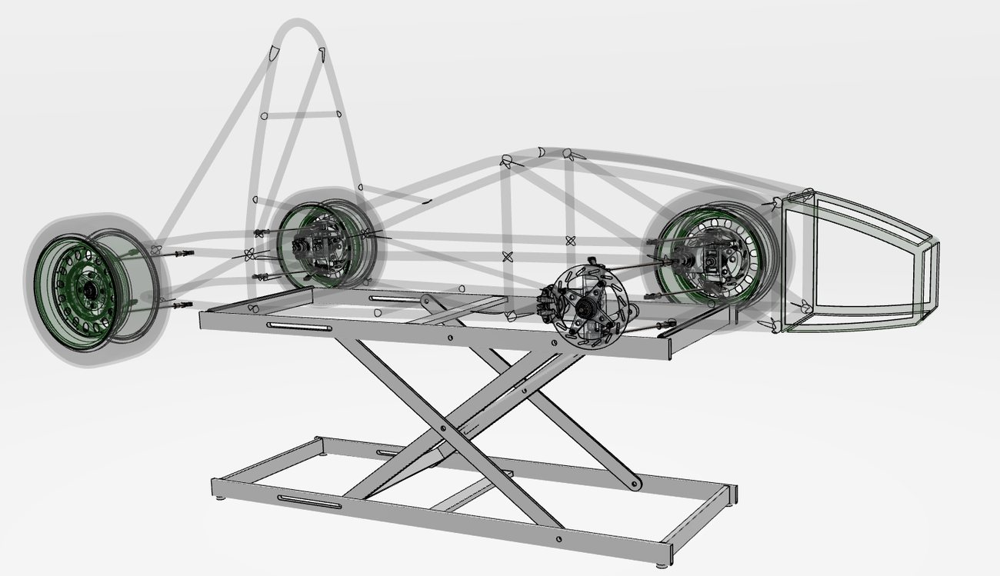
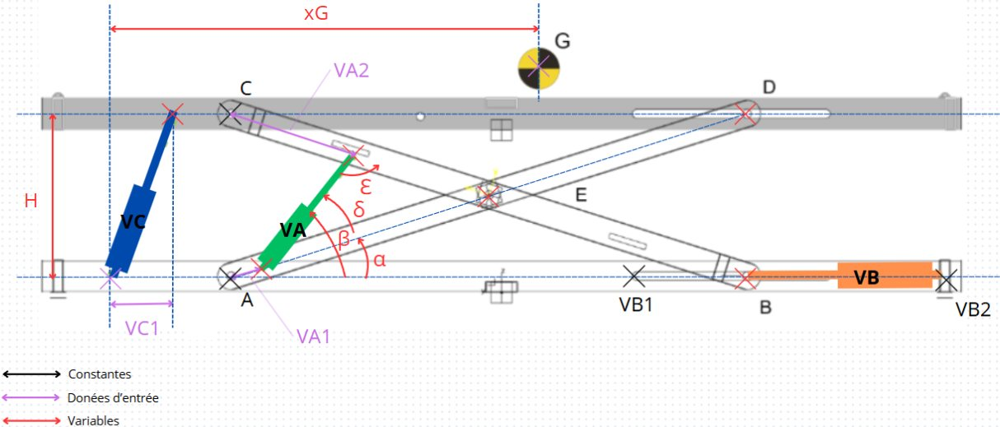
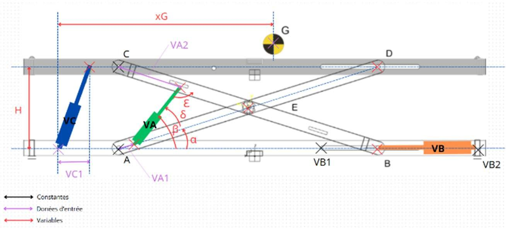
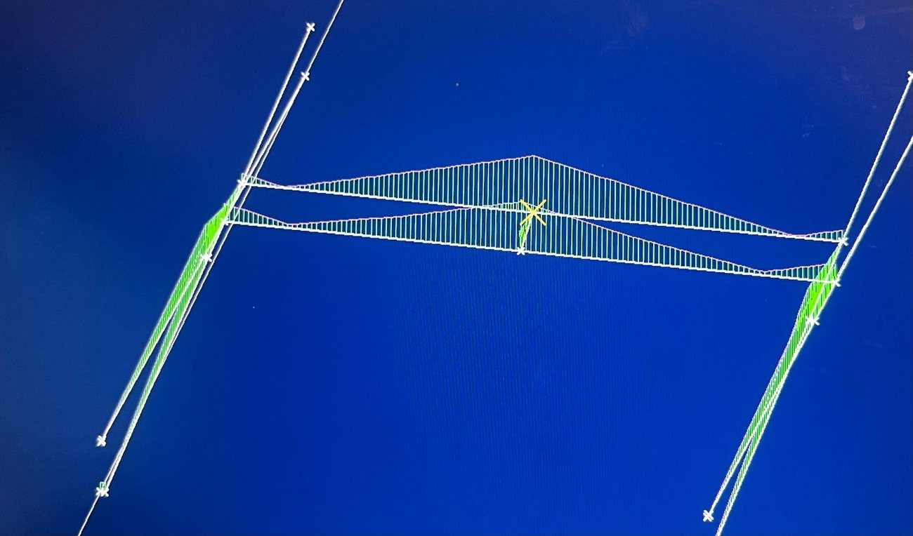
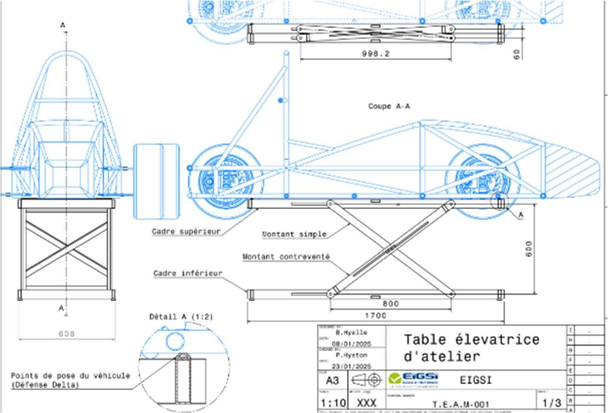
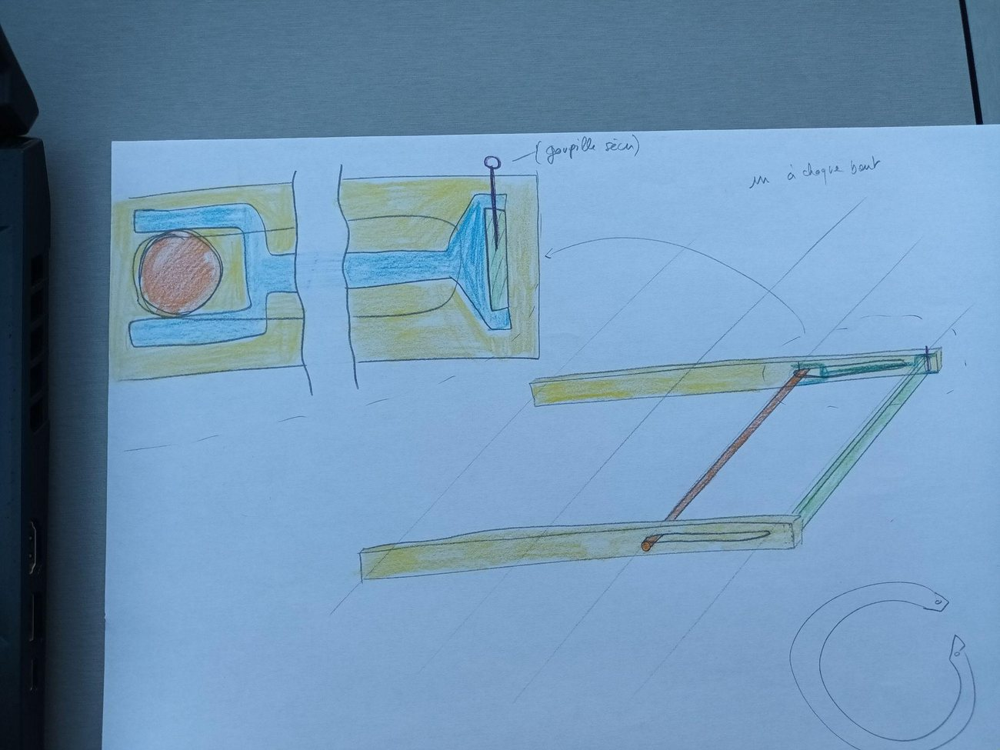

01Cahier des charges
- Soulever la monoplace sans pilote, jusqu'à 300 kg.
- Plateforme entre 150 mm (position basse) et 750 mm (position haute).
- Montée en moins de 120 s, descente en moins de 30 s.
- Coefficient de sécurité de 6 sur toutes les pièces mécaniques.
- Table mobile et autonome en énergie : pompe manuelle, ou motorisée sur batterie d'outillage 18 V.

02Mon rôle
L'équipe n'avait pas de rôles fixés. J'ai pris la coordination du projet (planning, répartition des tâches, suivi des livrables : note de calcul, plans, rapport) et j'ai participé aux calculs de dimensionnement.
03Cinématique et vérin
Nous avons comparé trois positions possibles pour le vérin, en calculant pour chacune son allongement en fonction de la hauteur. La position entre les deux bras du ciseau a été retenue. Ses points d'ancrage ont été optimisés dans une note de calcul Excel pour réduire l'effort, qui est maximal au début de la montée.
Une vérification sous RDM 7 donne un écart de 0,23 % avec nos calculs. Côté hydraulique, nous avons choisi un vérin de 60 mm de diamètre et une pompe manuelle. Il faut 65 coups de pompe, soit environ 117 s de montée, ce qui respecte la limite de 120 s.


04Dimensionnement
- Axes en acier S235, avec des coussinets autolubrifiants choisis selon la pression diamétrale.
- Cadres et montants modélisés sous RDM 7, puis redimensionnés jusqu'à atteindre le coefficient de sécurité de 6. Pour les montants, on passe d'un CS de 3,5 à 6,9.
- Liaisons : solutions techniques détaillées pour les pivots et les pivots glissants.


05Sécurité
Pour l'immobilisation en position haute, nous avons conçu un verrou anti-oubli : un axe rappelé par ressort suit la glissière et se bloque automatiquement en haut. Il se libère avec une simple ficelle, sans avoir à passer sous la table.

06Résultats
- La conception respecte le cahier des charges : 300 kg, montée en moins de 120 s, CS ≥ 6 sur toute la structure.
- Une note de calcul Excel complète, réutilisable si la charge ou les cotes changent.